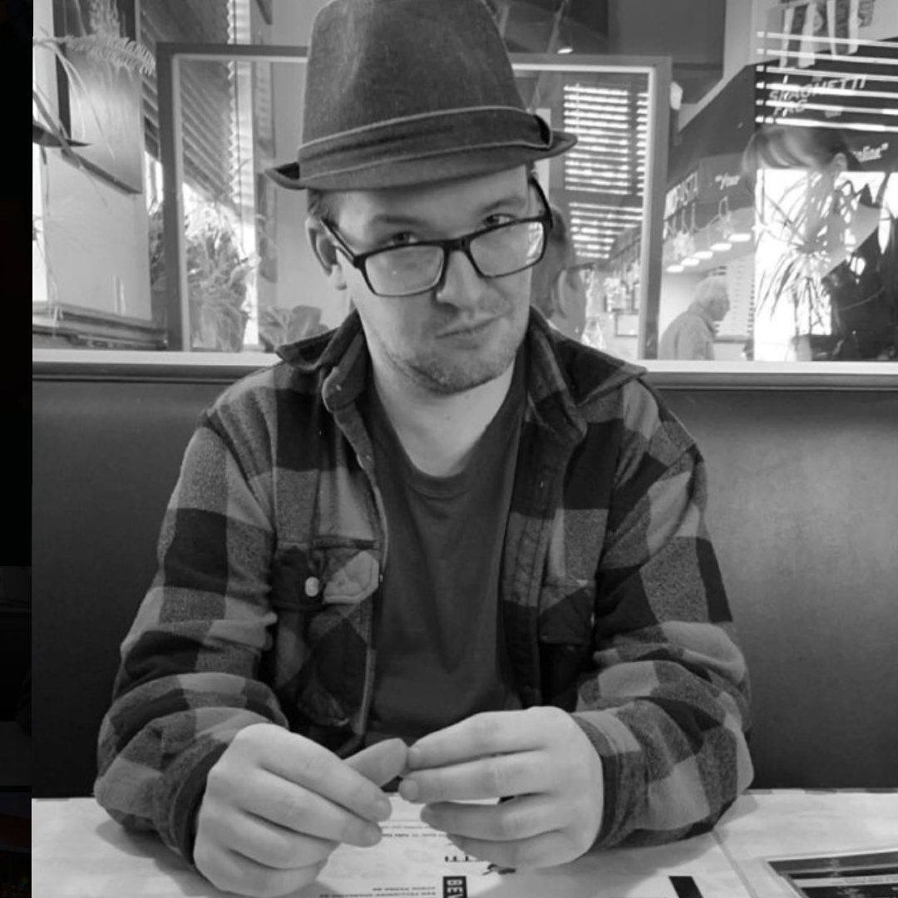

Ben Brunner
Journalist, broadcaster, narrator, host and storyteller from Maryland’s Eastern Shore.

- Salisbury UniversityBroadcast Journalism
- WFHW 90.3 FMFormer afternoon host
- Let's Do EntertainmentLive game show host
- Top Host 20263rd place nationwide
- PeekWireTop 5 Live Game Show Hosts To Watch
Ben Brunner is a journalist, broadcaster, narrator, host, and storyteller whose career has been driven by a love of people, conversation, and the stories that bring communities to life.
A graduate of Salisbury University with a degree in Broadcast Journalism, Ben has spent his career behind microphones, in front of cameras, on stages, and wherever there is a story worth telling. His work has taken him from radio studios to live events, from community journalism to digital entertainment, giving him a unique perspective on what it takes to capture an audience’s attention—and keep it.
Ben has built much of his broadcasting career on Maryland’s Eastern Shore, where he has worked in public radio as an on-air host, reporter, editor, and contributor. He has hosted All Things Considered, produced and edited local newstalk programming, interviewed community leaders and newsmakers, and covered the people, events, challenges, and successes that make the Eastern Shore unique.
His experience also extends into the world of digital storytelling. Ben has spent a year working as a narrator for the YouTube channels Marvelous Videos and Lore Lockdown, lending his voice to long-form documentary-style content. The work has given him experience bringing scripted stories to life through narration, using pacing, tone, emphasis, and delivery to maintain an audience’s attention throughout a story.
Narration has become a natural extension of Ben’s broadcasting background. Unlike traditional radio, where the personality of the host can be central to the presentation, documentary narration requires the voice to serve the story—knowing when to build tension, when to let a moment breathe, and when to allow the information itself to take center stage.
But broadcasting for Ben has never been limited to reading the news.
For nearly a decade, he has also worked as a live game-show host and entertainer, developing the ability to connect with audiences in real time, think on his feet, improvise, and turn an ordinary event into a memorable experience. That combination of journalism, narration, and live entertainment has become a defining part of his approach: informative without being dull, entertaining without losing substance, and always focused on the audience.
Ben believes the best storytellers are curious about the world around them. Whether he’s interviewing someone about an important community issue, narrating a documentary-style video, introducing a live audience, reporting a local story, or sitting behind a microphone for an afternoon broadcast, he approaches each opportunity with the same goal—to make people feel like they’re part of the conversation.
His interests extend well beyond the newsroom. He has a particular passion for local history, travel, culture, entertainment, sports, and the people who make communities special. He is especially interested in finding the stories that might otherwise go unnoticed and giving them a larger audience.
At the heart of Ben’s work is a belief that media can do more than deliver information. It can make people laugh, make them think, introduce them to someone they would never otherwise meet, and make them feel more connected to the world around them.
Whether it’s through a microphone, a camera, a narration booth, or a live audience, Ben Brunner’s mission is straightforward:
Tell the story. Connect with people. And make it worth listening to.